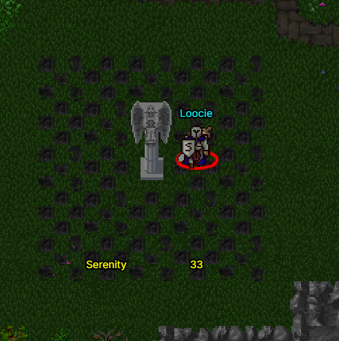

Overview
/JoinDrops is a competitive guild-based event where players fight to control a capture point.
To enter, players must meet the following requirements:
- Minimum Level: 30
- Must be in a Guild
- Must be wearing at least Level 10 equipment
Only 3 members per guild may enter the event at a time.

Capture Point Area
How It Works
The objective of /joindrops is to capture and hold the central point.
As your guild controls the point, progress increases toward 100%.
Once your guild reaches 100, you are rewarded with:
Control of the point can be contested by other guilds, making positioning and coordination key.
Drop Mechanics
This event takes place in a "Drops" enabled area.
If you die during the event, you will lose:
- A random currency note value OR
- A random item from your inventory
This makes survival extremely important when contesting the objective.
Tips
Stick with your team — going solo in a drop-enabled zone is very risky.
Focus on holding the point rather than chasing kills.
Bring gear you are willing to risk, as death can result in item loss.
Coordination between your 3 guild members is key to maintaining control.